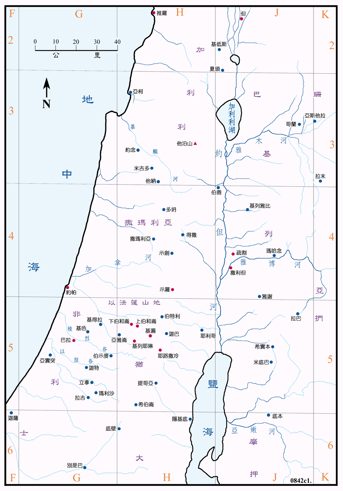
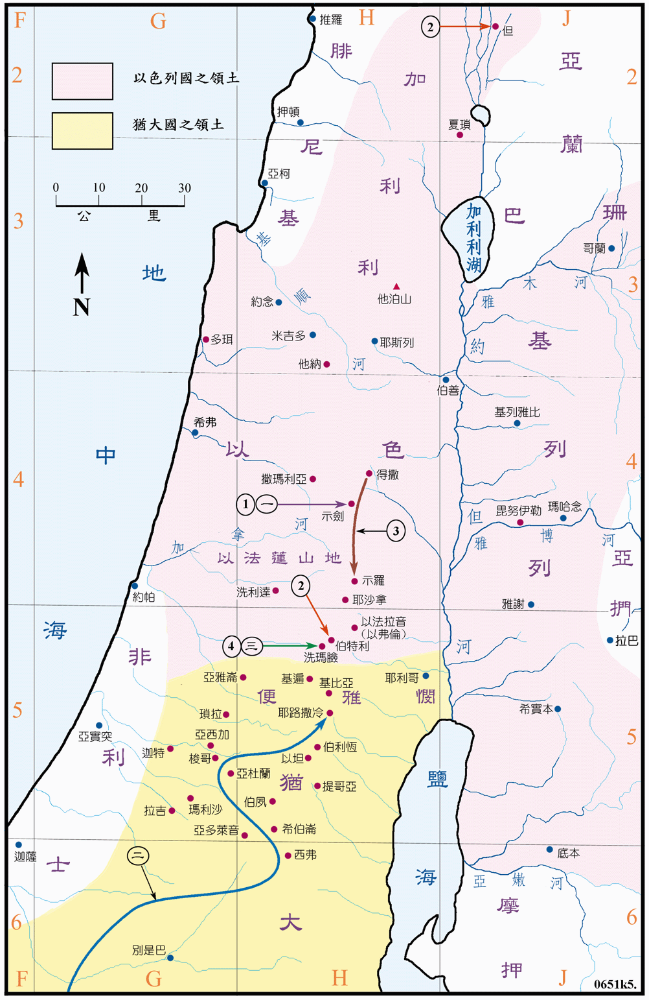
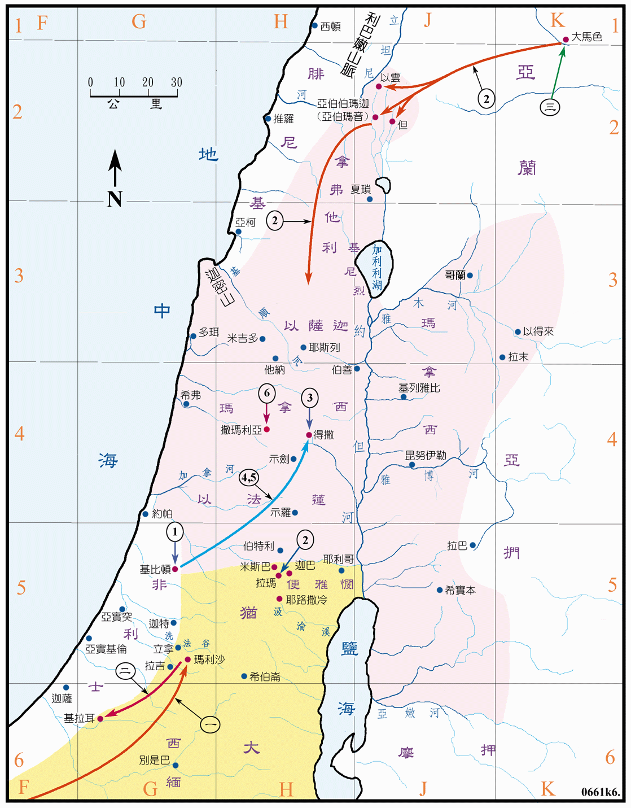
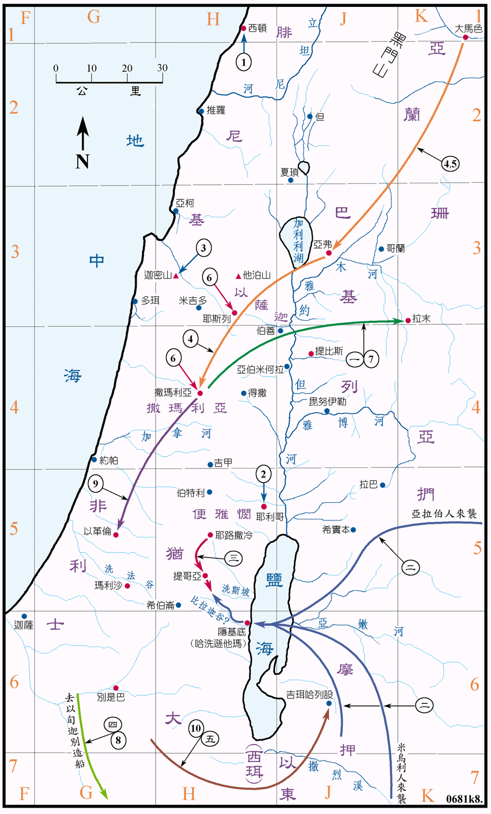
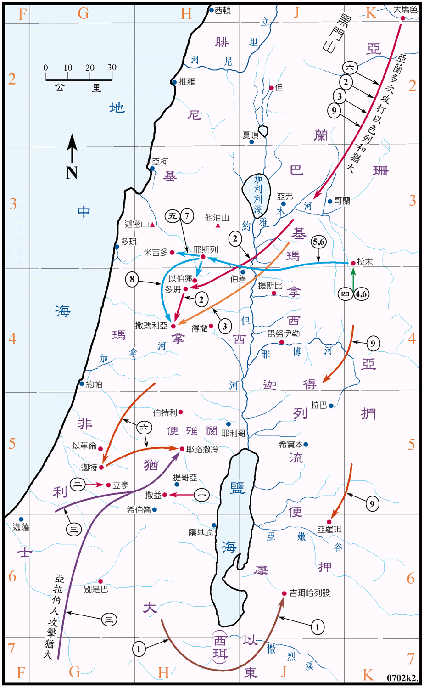
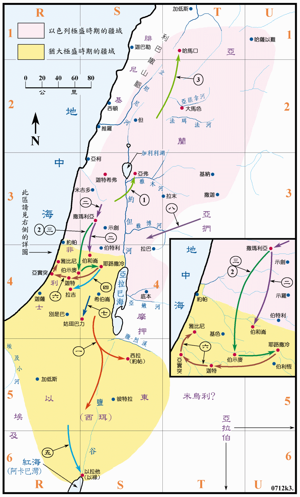
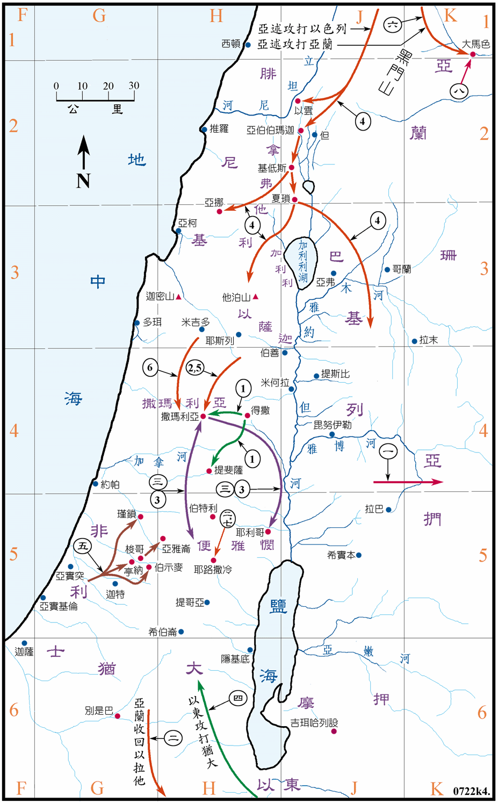
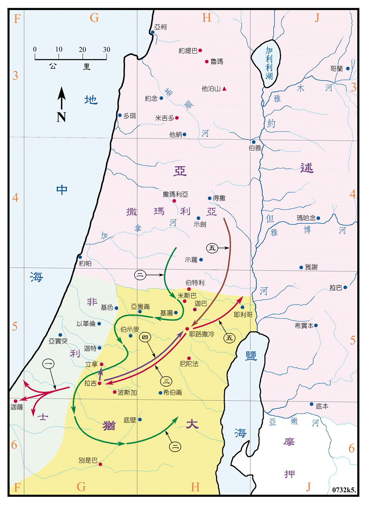
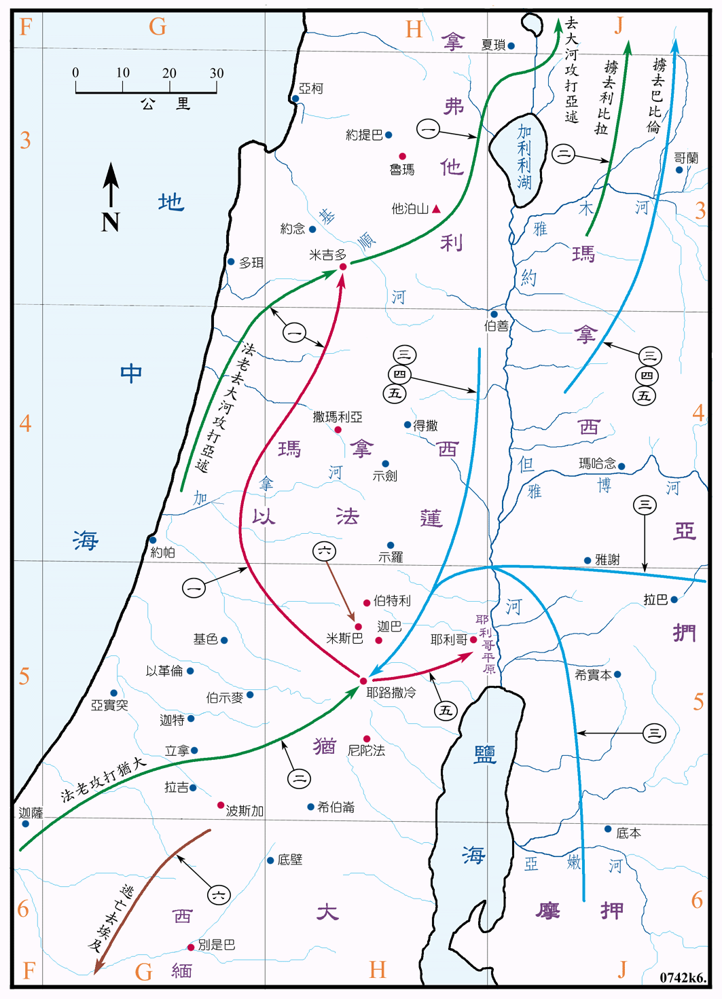

<代下图01>以色列地内的零星地名
说明：不包括在以下各图之零星地名，绘在<王上图01>至<王下图04>

诸图内之章节：
| 圣经 | 说明 |
|---|---|
| 代下1:1-13 (参看王上图02之1) | 所罗门往基遍献祭，耶和华在梦中向他显现，并祝福他，赐他智慧。 |
| 代下1:14-17 | 所罗门建军，并聚集建殿用之木材和金银。 |
| 代下2:1-18 (参看王上图04之1) | 所罗门求推罗王希兰全力协助他建圣殿，从腓尼基供应材料和工匠。 |
| 代下3:1-3 (参看王上图01) | 所罗门王登基后第四年，开始在摩利亚山上兴建圣殿，七年后完工 (959BC)。 |
| 代下4:16-17 (参看王上图02) | 户兰在约但河平原铸造圣殿中的铜器。 |
| 代下5:1-7:10 (参看王上图01之3) | 圣殿建造和器皿制造完成，以色列人将约柜从大卫城运来，抬进内殿，就是至圣所，又献祭为民祝福。 |
| 代下8:5-6 (参看王上图02及四) | 所罗门在各重要之处建城。 |
| 代下8:17-18，9:20-21 (参看王上图04) | 所罗门在以旬迦别和以禄，用船从俄斐及他施等地运回大量的金银和奇兽。 |
| 代下9:1-12 示巴女王觐见。(参看王上图04之2) | |
| 代下9:26 (参看王上图04) | 所罗门王的领土。 |
同<王上图05>罗波安和亚比雅（在王上中作亚比央）

罗波安 犹王一 932～916BC
| 序号 | 圣经 | 说明 |
|---|---|---|
| 代下9:31，12:13-14 | 所罗门去世，他的儿子罗波安接续他作王十七年。 | |
| 一、 | 代下10:1-19 | 罗波安到示剑，与以色列人谈判，但谈判破裂，结果王国分裂，北为以色列国，南为犹大国，南国仅有犹大一个支派之地，很可能包括西缅支派之地在内。 |
| 代下11:1-4 | 罗波安招聚十八万人，要攻击以色列家，但被耶和华所阻。 | |
| 代下11:5-17 | 罗波安在犹大地修 了许多坚固城，增强兵防，犹大国就强盛了三年，又有便雅悯和利未人来归。 | |
| 二、 | 代下12:2-9 | 罗波安五年，埃及王示撒攻取了犹大的坚固城，又攻打耶路撒冷，夺了圣殿和王宫中的宝物。 |
| 代下12:16-13:2 | 罗波安去世，他的儿子亚比雅接绩他作犹大的王三年。 |
亚比雅（在王上中作亚比央） 犹王二 916～914BC
| 序号 | 圣经 | 说明 |
|---|---|---|
| 三、 | 代下 13:2-20 | 亚比雅常与耶罗波安争战，亚比雅率兵四十万，在洗玛脸山攻击以色列人，得了以色列的几座城，耶罗波安就不能再强盛。 |
| 代下14:1 | 亚比雅作王三年后去世，他的儿子亚撒接续他作犹大的王。 |
同<王上图06>亚撒

亚撒 犹王三 914～874BC
| 序号 | 圣经 | 说明 |
|---|---|---|
| 代下14:1-8 | 亚撒王行耶和华看为正的事，除去境内的邱坛和偶像，又建了几座坚固城，增强兵力，国中就太平了数年。 | |
| 一、 | 代下14:9-10 | 古实王谢拉攻击犹大，彼此在玛利沙的洗法谷摆阵。同<王上图06>。 |
| 二、 | 代下14:11-15 | 藉神的帮助，亚撒王大胜，直追到基拉耳，古实就不能再强盛。同<王上图06>。 |
| 代下15:8-19 | 亚撒再度在犹大、便雅悯、以法莲山地，除去可憎之物、重修耶和华的坛，就有许多的以色列人来归降，南国太平直到亚撒卅五年。 | |
| 三、 | 代下16:1-5 | 亚撒和以色列王巴沙常常争战，亚撒王卅六年，以色列王巴沙上来修筑拉玛，阻止以色列人到犹大，亚撒王就以重金商请亚兰王便哈达相助，便哈达就攻破了以色列的北部，巴沙只得撤退。 |
| 代下16:6 | 以色列人撤兵后，亚撒就修 迦巴和米斯巴。 | |
| 代下16:11-13 | 亚撒作犹大王四十一年 , 去世前三年，因脚上有病，他的儿子约沙法接续他作王。 |
同<王上图08>约沙法

约沙法 犹王四 874～850BC
| 序号 | 圣经 | 说明 |
|---|---|---|
| 代下17 章 | 亚撒的儿子约沙法接续作犹大王，他遵行神的道，奋勇自强，除去境内可憎之物，又派人教导百姓、建造营寨、安置防兵在各地、犹大就日渐强大，四周列国都甚恐惧，非利士人和亚拉伯人都向他纳贡，以色列国也与他和好。 | |
| 一、 | 代下18:1-19:1 | 约沙法为儿子娶了亚哈王的女儿亚他利雅为妻。亚哈王邀约沙法一同攻打基列拉末，亚哈王在战场上被射死，约沙法平安回到耶路撒冷。 |
| 代下19:4-11 | 约沙法回来后，受到先知耶户的责备，就立定心意寻求神，出巡各地，除去木偶，引导百姓归向神。 | |
| 二、 | 代下20:1-2 | 摩押人、亚扪人和米乌尼人一同来攻打犹大。 |
| 三、 | 代下20:3-30 | 约沙法求告神，犹大全地宣告禁食，神使摩押人等溃败。 |
| 四、 | 代下20:35-37 | 约沙法与以色列王亚哈谢交好，二王合夥在以旬迦别造船，要到他施去，结果船破坏了，就未能去。 |
同<王下图02>约兰、亚哈谢、亚他利雅、约阿施

约兰 犹王五 850～843BC
| 序号 | 圣经 | 说明 |
|---|---|---|
| 代下21:1-7 | 约沙法还在位的时候，他的儿子约兰登基，作王八年，他不行神的道，他娶了以色列王亚哈的女儿亚他利雅为妻，又杀了他的众兄弟和几个首领，他在犹大诸山建 邱坛，诱惑犹大人行邪淫。 | |
| 一、 | 代下21:8-10 | 以东人背叛，约兰领兵到撒益去，但战败而返，以东就脱离犹大。 |
| 二、 | 代下21:10 | 立拿人也背叛犹大。 |
| 三、 | 代下21:16-18 | 非利士人和亚拉伯人来攻击犹大，掳掠了王宫中的财物，杀了他的妻儿，只留下小儿子约哈斯 (又名亚哈谢)，不久约兰就病重而死。亚哈谢接续他作王。 |
亚哈谢 犹王六 843～842BC
| 序号 | 圣经 | 说明 |
|---|---|---|
| 四、 | 代下22:1-9 | 亚哈谢作犹大王一年，他行恶，他与以色列王约兰一同去攻打拉末。 |
| 五、 | 代下22:1-9 | 约兰受伤后回耶斯列，亚哈谢去探望他，但被耶户所杀。 |
亚他利雅 犹王七 842～837BC
| 序号 | 圣经 | 说明 |
|---|---|---|
| 代下22:10-23:15 | 王后亚他利雅 (犹大王约兰之妻，以色列王亚哈的女儿) 见他儿子死了，就剿灭王室，篡了国位，自立为王，第七年，众人拥亚哈谢的儿子约阿施为犹大王，杀了亚他利雅。 |
约阿施 犹王八 836～797BC
| 序号 | 圣经 | 说明 |
|---|---|---|
| 代下24:1-22 | 约阿施作犹大王四十年，当祭司耶何耶大在世时，他行神看为正的事，重修圣殿。但耶何耶大去世后就偏离了神的道，并杀了耶何耶大的儿子撒迦利亚。 | |
| 六、 | 代下24:23-24 | 亚兰王哈薛攻取了迦特，再攻打耶路撒冷，约阿施就把宫中的宝物给了哈薛，亚兰人才离去，未攻打耶路撒冷。 |
| 代下24:25-27 | 约阿施患重病，被臣仆所杀，他的儿子亚玛谢接续他作王。 |
同<王下图03>亚玛谢、乌西雅（亚撒利雅）

亚玛谢 犹王九 797～767BC
| 序号 | 圣经 | 说明 |
|---|---|---|
| 代下25:1-3 | 亚玛谢作王廿九年，他行神眼中看为正的事，只是不专诚，他杀了他父亲的臣仆。 | |
| 一、 | 代下25:5-16 | 亚玛谢组织了三十万的大军，攻打以东，占领了西拉，并改名约帖。他带回西珥的神像，立为自己的神，因此耶和华的怒气向他发作。 |
| 二、 | 代下25:13 | 亚玛谢所遣回的十万以色列人，攻打犹大各城、从撒玛利亚直到伯和仑。 |
| 三、 | 代下25:17-24 | 亚玛谢向约阿施挑战，他在伯示麦被以色列人击败，约阿施来到耶路撒冷，拆毁城墙四百肘，又将圣殿和宫中的宝物取去，并带走人质。 |
| 四、 | 代下25:27-26:1 | 有人背叛，亚玛谢逃到拉吉，但仍杀。他的儿子乌西雅 (又名亚撒利雅) 接续他作王。 |
乌西雅（亚撒利雅） 犹王十 769～741BC
| 序号 | 圣经 | 说明 |
|---|---|---|
| 代下26:1-5 | 乌西雅十六岁登基，作王五十二年 (前二十四年与他的父亲共治，后十二年与他的儿子共治)，他行耶和华眼中看为正的事，只是邱坛没有废去。 | |
| 五， | 代下26:3 | 乌西雅收回以禄仍归犹大，又重新修理。 |
| 六、 | 代下26:6 | 他去攻击非利士人，拆毁了迦特、雅比尼和亚实突等城，在非利士人中，在亚实突境内，又建筑了些城，神帮助他攻击非利士人。 |
| 七、 | 代下26:7 | 乌西雅攻击住在姑珥巴力的亚拉伯人，并米乌利人。 |
| 八、 | 代下26:8 | 亚扪人给乌西雅进贡，他的名声传到埃及和远方，因他甚是强盛。 |
| 代下26:9-10 | 他在耶路撒冷的角门和谷门并城墙转弯之处，建筑坚固的城楼，又使巧匠作机器，安在城楼上，又在旷野与高原和平原建 望楼，挖了很多井。 | |
| 代下26:16-21 | 后来乌西雅因强盛而心高气傲，以致行事邪僻，耶和华降灾与王，他长大麻疯，他的儿子约坦治理国事，直到死日，死后约坦接续作王。 |
同<王下图04>约坦、亚哈斯

约坦 犹王十一 741～734BC
| 序号 | 圣经 | 说明 |
|---|---|---|
| 代下27:1-3 | 乌西雅的儿子约坦登基，作王十六年，他行耶和华眼中看为正的事，他建立耶和华殿的上门，又在犹大山地建 营寨。 | |
| 一、 | 代下27:5-8 | 约坦打仗胜了亚扪，使他们进贡，他行正道，以致日渐强盛，他儿子亚哈斯接续他作王。 |
亚哈斯 犹王十二 734～715BC
| 序号 | 圣经 | 说明 |
|---|---|---|
| 代下28:1-4 | 亚哈斯登基，作王十六年，他不行耶和华眼中看为正的事，却效法以色列诸王所行的，铸造巴力的像，并在欣嫩子谷烧香，用火焚烧他的儿女。 | |
| 二、 | 代下28:5 | 亚兰打败他，掳了许多人民，带到大马色去。同<王下图04>。 |
| 三、 | 代下28:5-15 | 以色列王比加，一日杀了十二万犹大人，又掳了二十万犹大人和财物到撒玛利亚去，先知俄德说服他们，使他们把被掳的犹大人送回到耶利哥。同<王下图04>。 |
| 四、 | 代下28:17 | 以东人又来攻击犹大。同<王下图04>。 |
| 五、 | 代下28:18 | 非利士人也来侵占高原和犹大南方的城邑、攻取了伯示麦、亚雅仑、基低罗、梭哥、亭纳、瑾锁。同<王下图04>。 |
| 六、 | 代下28:16 | 亚哈斯差人去见亚述诸王，求他们帮助。同<王下图04>。 |
| 七、 | 代下28:20-21 | 亚述王提革拉毗尼色上来，却没有帮助他，反倒欺凌他，亚哈斯从耶和华殿中和王宫中取了财宝给亚述王。同<王下图04>。 |
| 代下28:22-27 | 亚哈斯在急难的时候，越发得罪耶和华，惹动耶和华的怒气，他死后他的儿子接续他作王。 |
同<王下图05>希西家、玛拿西

希西家 犹王十三 715～697BC
| 序号 | 圣经 | 说明 |
|---|---|---|
| 代下29-31章 | 希西家登基，作王二十九年，他寻求耶和华，行他眼中看为正的事，他招集犹大人和以色列人到耶路撒冷守逾越节，他废去邱坛，木偶和铜蛇，使百姓专心遵守耶和华的律法，总不离开，耶和华与他同在，他行事尽都亨通。他背叛亚述王，不肯事奉亚述。 | |
| 二、 | 代下32:1 | 亚述王西拿基立入侵犹大，围困一切坚固城，想要攻破占据 (约是 701BC)。 |
| 四、 | 代下32:2-23 | 希西家见西拿基立来，定意要攻打耶路撒冷，希西家就挖沟挖池，引水入城，又修筑所有拆毁的城墙，在城外又筑一城，以坚固大卫的米罗。亚述军队围困耶路撒冷，并以其战功威胁。希西家求神，先知以赛亚预言神必拯救，当夜耶和华的使者出去，在亚述营中杀了十数万人，亚述王就回去了 (约是 688BC)。 |
| 代下32:24-25 | 希西家病得要死而求神，神医治了他的病，赐给他一个兆头，但希西家并没有照他所蒙的恩报答耶和华。 | |
| 代下32:31 | 巴比伦王差遣使者来见希西家，访问国中所现的奇事。 |
玛拿西 犹王十四 697～642BC
| 序号 | 圣经 | 说明 |
|---|---|---|
| 代下33:1-10 | 希西家死后，他儿子玛拿西接续他作王五十五年。他引诱犹大人行恶，不听耶和华的警戒。 | |
| 五、 | 代下 33:11-13 | 神使亚述王来攻击，用铙钩钩住玛拿西，用铜链锁住他带到巴比伦去。神垂听了他自卑的祈祷，使他归回耶路撒冷，他这才知道惟独耶和华是神。 |
| 代下33:14-20 | 此后玛拿西整建耶路撒冷城，除掉外邦人的神像，拆毁邱坛，使民事奉耶和华。他儿子亚们接续他作王。 |
同<王下图06>约西亚、约哈斯、约雅敬、约雅斤、西底家

约西亚 犹王十六 639～609BC
| 序号 | 圣经 | 说明 |
|---|---|---|
| 代下34:1-35:19 | 约西亚登基作王卅一年，他行耶和华眼中看为正的事，十六岁时就寻求神，二十岁时洁净了犹大、耶路撒冷、玛拿西、以法莲、西缅、拿弗他利各城，廿六岁时修理圣殿，在殿中得到了摩西所传的律法书，把书念给众民听，令民守逾越节。 | |
| 一、 | 代下35:20-24 | 埃及王法老尼哥上到伯拉河，要去攻击亚述，约西亚去抵挡他，在米吉多平原被埃及兵射成重伤，回到耶路撒冷就死了，他的次子约哈斯接续他作王。 |
约哈斯 犹王十七 609BC
| 序号 | 圣经 | 说明 |
|---|---|---|
| 二、 | 代下36:1-4 | 约哈斯登基作王三个月，他行耶和华眼中看为恶的事，法老尼哥在耶路撒冷废了他，立他的哥哥以利雅敬作王，并改名为约雅敬，又将约哈斯带到埃及去了。 |
约雅敬 犹王十八 609～597BC
| 序号 | 圣经 | 说明 |
|---|---|---|
| 代下36:5 | 埃及王法老尼哥立以利雅敬接续作王，又将他改名为约雅敬，他作王十一年，他行耶和华眼中看为恶的事。 | |
| 三、 | 代下36:6-9 | 约雅敬年间，巴比伦王尼布甲尼撒上来攻击他，用铜链锁着他，将他带到巴比伦去，同时又将圣殿里的器皿掳到巴比伦去，放在他神的殿里。他儿子约雅斤接续他作王。 |
约雅斤 犹王十九 598BC
| 序号 | 圣经 | 说明 |
|---|---|---|
| 四、 | 代下36:9-10 | 约雅斤登基作王三个月，他行耶和华眼中看为恶的事，尼布甲尼撒差人将约雅斤和耶和华殿中的器皿都掳去巴比伦。巴比伦王又立他的叔叔西底家作王。 |
西底家 犹王二十 598～587BC
| 序号 | 圣经 | 说明 |
|---|---|---|
| 五、 | 代下36:11-21 | 巴比伦王立西底家作王，作王十一年，他行耶和华眼中看为恶的事，不听先知耶利米的劝告，神使迦勒底人上来攻击他们，焚烧神的殿、拆毁耶路撒冷的城墙和房屋，把人民都掳去巴比伦。南国犹大从此灭亡。 |